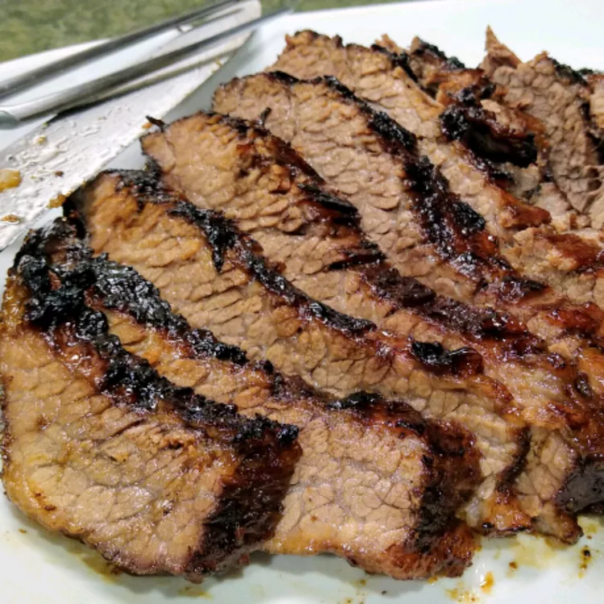

Home
Oklahoma Brisket

the juiciest brisket of your life
This Oklahoma brisket recipe isn't dried out and is fabulously moist, tender, and delicious. The barbecue sauce is so flavorful and is versatile enough to use for other meat dishes.
Ingredients
- 1 (5 pound) beef brisket
- seasoned salt to taste
- 1 cup apple cider
- 1/2 cup honey
- 3 tablespoons soy sauce
- 3/4 cup ketchup
- 1/4 cup packed brown sugar
- 1/4 cup apple cider vinegar
- 2 tablespoons Worcestershire sauce
- 1/2 teaspoon garlic powder, or to taste
Steps
- Preheat the oven to 300 degrees F (150 degrees C).
- Season brisket all over with salt; place in a roasting pan. Pour apple cider over brisket; cover tightly with foil. Cook in the preheated oven until tender, about 3 hours. Don't peek.
- Preheat an outdoor grill for low heat and lightly oil the grate. Combine honey, soy sauce, and salt in a small bowl.
- Transfer brisket to the preheated grill; cook, turning and basting frequently with honey sauce, about 30 minutes.
- Combine ketchup, sugar, vinegar, Worcestershire sauce, garlic powder, and salt in a saucepan; cook sauce on low heat until flavors meld, about 15 minutes. Do not boil, or sauce will become too vinegary.
- Rest brisket about 10 minutes, then slice and serve with barbecue sauce.